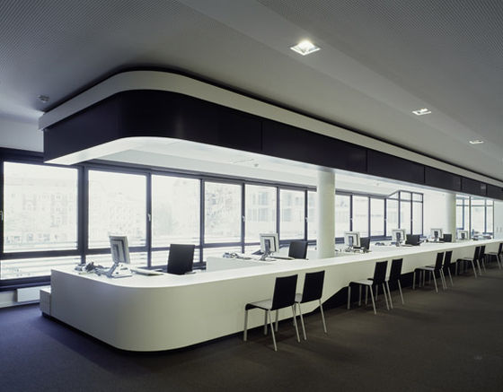

Rigacom
Office Building
Office
In 2008, when the company’s team overgrew the old office and every morning you could find two more colleagues sitting in your chair – we decided to look for a new home. Initially, our first architectural project was commissioned by Zurab Tsereteli, but for its construction we’d have to demolish a couple of neighbourhoods, which meant losing a lot of potential customers. Our next idea was to move to the Presidential palace, but it turned out to be busy. So, when we finally found a cosy building at Straupes Street, everyone breathed a sigh of relief.
Customer Service Center
Our customer service centre is a warm and cosy place – over 150 people visit it daily. We are especially pleased when clients visit us with their children – we even have a small play corner for kids to draw and read. We also have a bookshelf with a collection of rare editions, a coffee machine with an amazingly delicious coffee and a large TV. There were times when sports fans gathered at our service centre just to watch a football match. Fun fact – they were not even our customers!
New Connections Department

In the department of new connections, a telephone is the main working tool – our operators process up to 500 calls per day. Can you imagine that? On average, each employee in this department wears out 2 telephones per year. When hiring new employees, we make them pass two tests: the first one in typography and the second one in “tongue twister.” We have a theory that if you wake up our new connection specialist in the middle of the night, he will name every possible service at any Riga address without hesitation. And he will ask if you’d like to connect telephony as well.
Business Customer Department
It's one thing to find an individual solution for a client, connect him to the services, provide an interrupted Internet and television connection. And it’s a completely different thing – if your client is not one person, but an entire company. For the best business solutions, they turn to this department. The main criteria when hiring someone here are high oratory skills and a strong handshake. The team of this department had more than 855 handshakes over the past 2 years.
Technical Department 24/7
Even after a short work experience in the department, our round-the-clock technical assistance operators can easily obtain an extra education in psychology — sometimes clients contact the technical department, because they are in need of psychological support due to the loss of the Internet. Our technical operators are especially pleased with night calls, asking to solve a TV problem like: “I can't find my remote!” In any case, customer problems are solved with all care and seriousness.
Internet and Television in Riga and Riga District from 6 euros per month
Bundles
Internet
Television
Telephony
Agreement for 24 months
Open-ended agreement
Tariffs for pensioners
If You need help in choosing the best tariff or connection advice, our managers will be happy to assist You. Call or leave a request!
Internet for Business
Broadband speed guarantee
Identical Upload and Download
Open-ended Agreement
Private optical network
Enhanced security of private and public networks